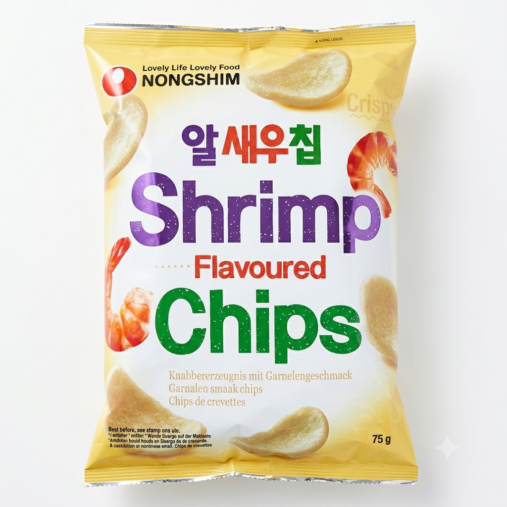
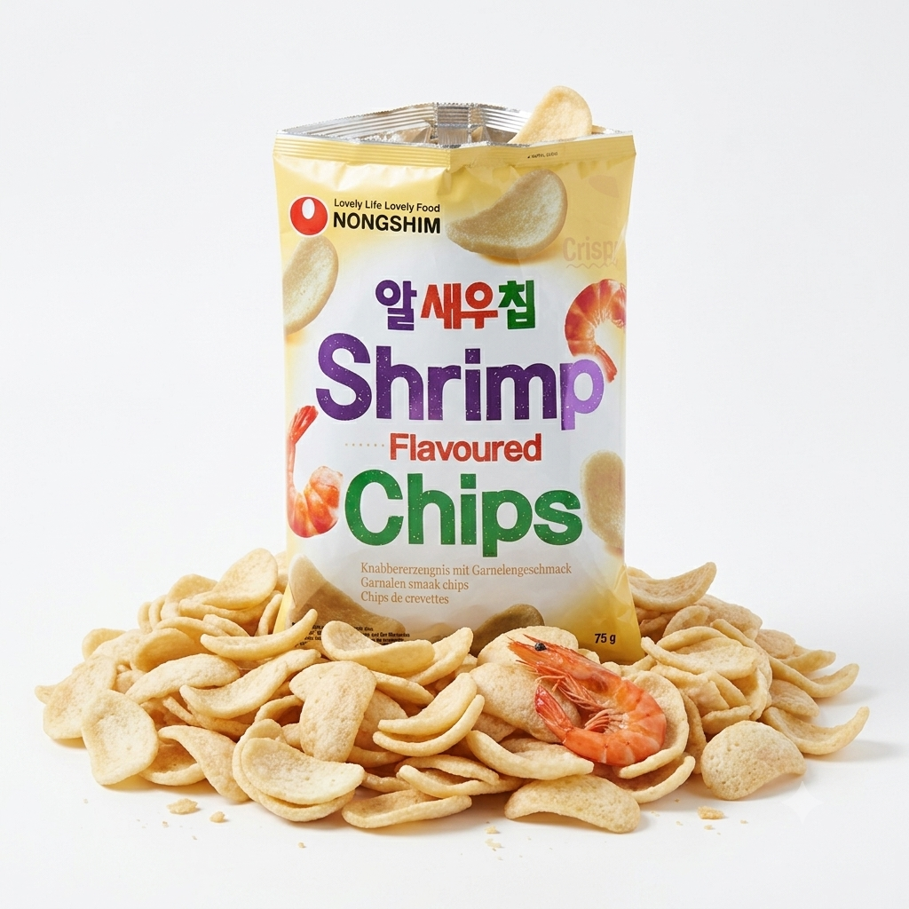

| Nongshim Chips-uri cu aroma de creveti, 75g
Gustul marii intr-o textura incredibil de aerata!
Lasa-te cucerit de faimoasele Nongshim Shrimp Chips: chipsuri lejere, rumenite usor, care se topesc pur si simplu in gura cu o aroma fina si autentica de creveti. Sunt gustarea crocanta si inedita, perfecta pentru serile de film sau momentele de relaxare. Le-ai incercat? |  |
 | O explozie de crocant in fiecare punga!
Priveste cat de aerate si ispititoare sunt aceste chipsuri coreene cu creveti! Fiecare bucatica este extrem de usoara, crocanta si plina de savoare autentica marina. Impartaseste-le cu prietenii sau pastreaza-le doar pentru tine – punga este deschisa, tentatia e maxima. |